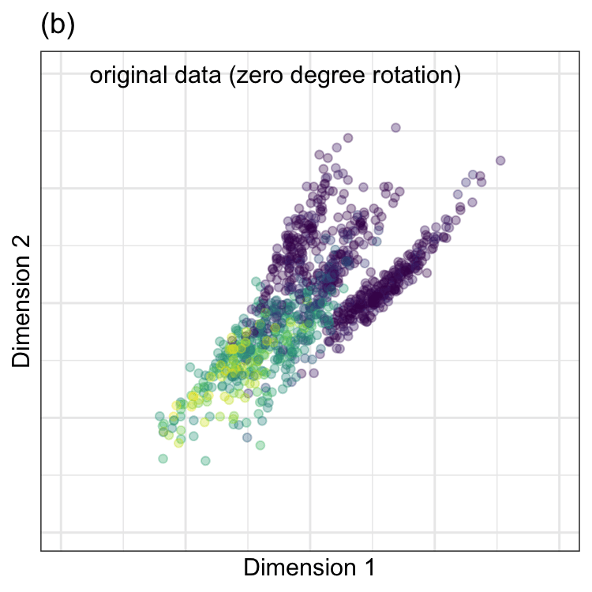

6 Embeddings
When there are a multitude of predictors, it might be advantegous to condense them into a smaller number of artificial features. To be useful, this smaller set should represent what is essential in the original data. This process is often called feature extraction, dimension reduction, or manifold learning. We’ll use a more general term currently en vogue: embeddings. While this chapter focuses on feature extraction, embeddings can be used for other purposes, such as converting non-numeric data (e.g., text) into a more usable numeric format.
This chapter will examine several primary classes of embedding methods that can achieve multiple purposes. First, we’ll consider linear methods that take a numeric input matrix \(\boldsymbol{X}\) that is \(n \times p\) and create a different, probably smaller set of features \(\boldsymbol{X}^*\) (\(n \times m\)) using the transformation \(\boldsymbol{X}^* = \boldsymbol{X}\boldsymbol{Q}\). We hope that we can find appropriate embeddings so that \(m << p\).
After describing linear methods, we will consider a different class of transformations that focuses on the distances between data points called multidimensional scaling (MDS). MDS creates a new set of \(m\) features that are not necessarily linear combinations of the original features but often use some of the same math as the linear techniques.
Finally, some embedding techniques specific to classification are discussed. These are based on class centroids.
Before beginning, we’ll introduce another data set that will be used here and in forthcoming chapters.
6.1 Example: Predicting Barley Amounts
Larsen and Clemmensen (2019) and Fernández P et al. (2020) describe a data set where laboratory measurements are used to predict what percentage of a liquid was lucerne, soy oil, or barley oil1. An instrument is used to measure how much of particular wavelengths of light are absorbed by the mixture to help determine chemical composition. We will focus on using the lab measurements to predict the percentage of barley oil in the mixture. The distribution of these values is shown in Figure 6.1(a).
Note that most of the data have very little barley oil. About 27% of the data are less than 1%, and the median barley oil percentage is 5.96%.
The 550 predictors are the light absorbance for sequential values in the light region of interest (believed to be from wavelengths between 1300 and 2398 nm). Figure 6.1(b) shows a selection of four samples from the data. The darker lines represent samples with lower barley content.
These predictor values, called spectra, have a very high serial correlation between predictors; median correlation between the predictors was 0.98. The high degree of between-predictor correlation can be a major complication for some models and can degrade predictive performance. Therefore, we need methods that will simultaneously decorrelate predictors while extracting useful predictive information for the outcome.
Analyses of similar data sets can be found in Section 9.1 of Kuhn and Johnson (2019) and Johnson and Kuhn (2024).
In the following computations, each predictor was standardized using the orderNorm transformation mentioned earlier (unless otherwise noted).
The data originated from a modeling competition to find the most accurate model and specific samples were allocated to training and test sets. However, there were no public outcome values for the test set; our analysis will treat the 6,915 samples in their training set as the overall pool of samples. This is enough data to split into separate training (\(n_{tr} =\) 4,839), validation (\(n_{val} =\) 1,035), and test sets (\(n_{te} =\) 1,041). The allocation of samples to each of the three data sets utilized stratified sampling based on the outcome data.
6.2 Linear Transformations
The barley data set presents two common challenges for many machine learning techniques:
- The number of original predictors (550) is fairly large .
- The features are highly correlated. Techniques that require inverting the covariance matrix of the features, such as linear regression, will become numerically unstable or may not be able to be fit when features are highly correlated.
What can we do if we desire to use a modeling technique that is adversely affected by either (or both) of these characteristics?
Dimensionality reduction is one technique that can help with the first issue (an abundance of columns). As we’ll see below, we might be able to extract new features (\(X^*\)) such that the new features optimally summarize information from the original data (\(X\)).
For the problem of highly correlated predictors, some embedding methods can additionally decorrelated the predictors by deriving embedded features with minimal correlation.
The three embedding methods we’ll discuss first are linear in a mathematical sense because they transform a table of numeric features into new features that are linear combinations of the original features. These new linear combinations are often called scores. This transformation uses the equation.
\[ \underset{n\times m}{\boldsymbol{X}^*} = \underset{n\times p}{\boldsymbol{X}}\ \underset{p\times m}{\boldsymbol{Q}} \]
where \(\boldsymbol{Q}\) is a matrix that translates or embeds the original features into a potentially lower dimensional space (\(m < p\)) without losing much information. It is easy to see why this matrix operation is linear when the elements of the \(\boldsymbol{X}\) and \(\boldsymbol{Q}\) matrices are expanded. For example, the first score for the \(i^{th}\) sample would be:
\[ x^*_{i1} = q_{11} x_{i1} + q_{21}x_{i2} + \ldots + q_{p1}x_{ip} \tag{6.1}\]
The \(q_{ij}\) values are often referred to as the loadings for each predictor in the linear combination.
In this section, we will review principal components analysis (PCA), independent component analysis (ICA), and partial least squares (PLS), which are fundamental linear embedding techniques that are effective at identifying meaningful embeddings but estimate \(A\) in different ways. PCA and ICA extract embedded features using only information from the original features; they are unsupervised. Conversely, PLS uses the predictors and outcome; it is a supervised technique.
There are many other linear embedding methods that can be used. For example, non-negative matrix factorization (Lee and Seung 1999, 2000)is an embedding method that is useful when the data in \(X\) are integer counts or other values that cannot be negative.
To start, we’ll focus on the most often used embedding method: PCA.
6.2.1 Principal Component Analysis
Karl Pearson introduced PCA over a century ago, yet it remains a fundamental dimension reduction method (Jolliffe and Cadima 2016). Its relevance stems from the underlying objective of the technique: to find linear combinations of the original predictors that maximize amount of variation in the new features2.
From a statistical perspective, variation is synonymous with information.
Simultaneously, the scores produced by PCA (i.e., \(X^*\)) are required to be orthogonal to each other. The important side benefit of this technique is that PCA scores are uncorrelated. This is very useful for modeling techniques that need the predictors to be relatively uncorrelated: multiple linear regression, neural networks, support vector machines, and others.
In a way, PCA components have an order or hierarchy. The first principal component has a higher variance than any other component. The second component has a higher variance than subsequent components, and so on. We can think of this process as one of deflation; the first component extracts the largest sources of information/variation in the predictors set. The second component extracts as much as possible for whatever is left behind by the first, and so on. For this reason, we can track how much variation in the original data each component accounts for. We often use the phrase that “PCA chases variation” to achieve its goals.
Suppose we start with \(p\) columns3 in our data. In that case, we can produce up to \(p\) PCA components, and their accumulated variation will eventually add up to the total variation in the original \(X\).
While PCA can deliver new features with the desirable characteristics, the technique must be used with care. Specifically, we must understand that PCA seeks to find embeddings without regard to any further understanding of the original features (such as the response). Hence, PCA may generate embeddings that are ignorant of the modeling objective (i.e., they lack predictive information).
Preparing for PCA
Because PCA seeks linear combinations of predictors that maximize variability, it will naturally first be drawn to summarizing predictors with more variation. If the original predictors are on measurement scales that differ in magnitude, then the first components will focus on summarizing the higher magnitude predictors. This means that the PCA scores will focus on the scales of the measurements (rather than their intrinsic value). If, by chance, the most relevant feature for predicting the response also has the largest numerical values, the new features created by PCA will retain the essential information for predicting the response. However, if the most important features are in the smallest units, then the top features created by PCA will be much less effective.
In most practical machine learning applications, features are on vastly different scales. We suggest using the tools from Section 4.3 to transform the data so that they have the same units. This prevents PCA from focusing dimension reduction simply on the measurement scale.
Additionally, the distributions of each feature may show considerable skewness or outliers. While there are no specific distributional requirements to use PCA, it is focused on variance and variance calculations often involve squared terms (e.g., \((x_i - \bar{x})^2\)). This type of computation can be very sensitive to outliers and skewness; resolving these issues prior to PCA is recommended. See the methods previously described in Section 4.2. When outliers are a specific concern, the spatial-sign transformation might be a good idea (Visuri, Koivunen, and Oja 2000; Croux, Ollila, and Oja 2002).
How does PCA work?
Principal component analysis is focused on understanding the relationships between the predictor columns. PCA is only effective when there are correlations between predictors. Otherwise, each new PCA feature would only highlight a single predictor, and you would need the full set of PCA features to approximate the original columns. Conversely, data sets with a handful of intense between-predictor relationships require very few predictors to represent the source columns.
The barley data set has abnormally high correlations between each predictor. These tend to be autoregressive; the correlations between predictors at adjacent wavelengths are very high, and the correlation between a pair of predictors diminishes as you move away from their locations on the spectrum. For example, the correlation between the first and second predictor (in their raw form) is essentially 1 while the corresponding correlation between the first and fiftieth columns is 0.67. We’ll explore the latter pair of columns below.
Before proceeding, let’s go on a small “side-quest” to talk about the mathematics of PCA.
The remainder of this subsection discussed a mathematical operation called the singular value decomposition (SVD). PCA and many other computations rely on on the SVD. It is a fundamental linear algebra calculation.
We’ll describe it loosely with a focus on how it is used. The concept of eigenvalues will come up again in the next section and in subsequent chapters. Banerjee and Roy (2014) and Aggarwal (2020) are thorough but helpful resources for learning more.
The SVD process is intended to find a way to rotate the original data in a way that the resulting columns are orthogonal to one another. It takes a square matrix as an input and can decompose it into several pieces:
\[\underset{p\times p}{A} = \underset{p\times p}{Q}\quad\underset{p\times p}{\Lambda}\quad \underset{p\times p}{Q'}\]
The results of this computation are the \(p\) eigenvectors \(\mathbf{q}_j\) and eigenvalues \(\lambda_j\). The eignevectors tell you about the directions in which values of \(A\) are moving and the eigenvalues describe the corresponding magnitudes (e.g. how far they go in their corresponding direction).
The transformation works with PCA by using the covariance matrix as the input \(A\). We are trying to find trends in the relationships between variables and the SVD is designed to translate the original matrix to one that is orthogonal (that is, uncorrelated). This aspect of the SVD is how it connects to PCA. If we want to approximate our original data with new features that are uncorrelated, we need a transformation to orthogonality.
The matrix \(Q\) houses the \(p\) possible eigenvectors. These are the values by which you multiply the original matrix \(A\) to achieve an orthogonal version. For PCA, they are the loading values shown in Equation 6.1. The matrix \(\Lambda\) is a diagonal matrix whose \(p\) values are the eigenvalues. It turns out that the eigenvalues represent the amount of variation (i.e., information) captured by each component.
If we conduct the SVD (and PCA) on the covariance matrix of the data, we are again subject to issues around potentially different units and scales of the predictors. Previously, we suggested to center and scale the data prior to PCA. The equivalent approach here is to conduct the SVD on the correlation matrix of the data. Similar to our recommendations on standardization, we recommend using the correlation as the input to PCA.
One interesting side-effect of using the covariance or correlation matrix as the input to PCA is related to missing data (discussed in more detail in ?sec-missing-data). The conventional sample covariance (or correlation) matrices can be computed for each matrix element (i.e., without using matrix multiplication). Each covariance or correlation can be computed with whatever rows of the two predictors have pairwise-complete results. This means that we do not have to globally drop specific rows of the data when a small number of columns contain missing data.
A two dimensional example
To demonstrate, we chose two predictors in the barley data. They correspond to wavelengths4 1,300 and 1,398 shown in Figure 6.1(b). In the data, these two predictors were preprocessed using the ORQ procedure (Section 4.2). The standardized versions of the predictors have a correlation of 0.68 and are shown in Figure 6.2(a).
PCA was performed on these data, and the results are animated in Figure 6.2(b). This visualization shows the original data (colored by their outcome data) and then rotates it around the center position. The PCA transformation corresponds to the rotation where the x-axis has the largest spread. The variance is largest at two angles (135\(^{\circ}\) and 315\(^{\circ}\)) since the solution for PCA is unique up to sign. Both possible solutions are correct, and we usually pick one. For one solution, the PCA loading coefficients are:
\[\begin{align} x^*_{i1} &= -0.71 x_{i1} -0.71 x_{i2} \notag \\ x^*_{i2} &= -0.71 x_{i1} + 0.71 x_{i2} \notag \end{align}\]
Because of this illustrative example’s low-dimensional aspect, this solution is excessively simple. Ordinarily, the loading values take a great many values.


Again,the remarkable characteristic of this specific set of linear combinations is that they are orthogonal (i.e., uncorrelated) with one another.
Using PCA to transform the data into a full set of uncorrelated variables is often called “whitening the data.” It retains all of the original information and is more pliable to many computations. It can be used as a precursor to other algorithms.
Now that we’ve seen PCA on a small scale, let’s look at an analysis of the full set of predictors
PCA on the barley data
We’ll repeat the analysis in the preceding section; PCA was calculated on the training set using all predictors. There are 550 feature columns and the same number of possible principal components. The number of new features to retain is a parameter that must be determined. In practice, the number of new features is often selected based on the percentage of variability that the new features summarize relative to the original features. Figure 6.3 displays the new PCA feature number (x-axis) versus the percent of total variability across the original features (commonly called a “scree plot”). In this graph, three components summarize 99.4% of the total variability. We often select the smallest number of new features that summarize the greatest variability. Again, this is an unsupervised optimization. To understand how the number of components affects supervised predictors (e.g., RMSE), the number of features can be treated as a tuning parameter .

Note that the first component alone captured 92.3% of the variation in the 550 training data columns. This reflects the extreme correlation seen in the predictors.
Figure 6.4 shows a scatterplot of the principal components colored by the percentage of barley oil. The figure reveals that the first PCA component delineates the higher barley oil samples from those with less oil. There also appear to be three different clusters of samples with very low (if any) barley oil. It might be helpful to investigate these samples to ascertain if they are artifacts or caused by some systematic, underlying factors not in the current set of columns. The pairing of the second and fourth components appears to help differentiate lower barely samples from the broader set. The pairing of the third and fourth components doesn’t offer much predictive power on their own.
#| label: fig-linear-scores
#| out-width: "80%"
#| viewerHeight: 550
#| standalone: true
library(shiny)
library(ggplot2)
library(bslib)
library(viridis)
library(dplyr)
library(tidyr)
library(purrr)
library(ggforce)
source("https://raw.githubusercontent.com/aml4td/website/main/R/shiny-setup.R")
source("https://raw.githubusercontent.com/aml4td/website/main/R/shiny-linear-scores.R")
appOne note about this visualization. The axis scales are not common across panels (for ease of illustration). If we were to keep a common scale, the later components would appear to have very little effect due to the flatness of the resulting figures. When looking at the scores, we suggest keeping a common scale, which will most likely be the scale of the first component. This will help avoid over-interpreting patterns in the later components.
For PCA, it can be very instructive to visualize the loadings for each component. This can help in several different ways. First, it can tell which predictors dominate each specific new PCA component. If a particular component ends up having a strong relationship with the outcome, this can aid our explanation of how the model works. Second, we can examine the magnitude of the predictors to determine some of the relationships between predictors. If a group of predictors have approximately the same loading value, this implies that they have a common relationship with one another. This, on its own, can be a significant aid when conducting exploratory data analysis on a high-dimensional data set. Figure 6.5 shows the relationship between the PCA loadings and each predictor’s position on the spectrum.
#| label: fig-linear-loadings
#| viewerHeight: 550
#| standalone: true
library(shiny)
library(ggplot2)
library(bslib)
library(viridis)
library(dplyr)
source("https://raw.githubusercontent.com/aml4td/website/main/R/shiny-setup.R")
source("https://raw.githubusercontent.com/aml4td/website/main/R/shiny-linear-loadings.R")
appFor the first component, wavelengths at the low ends of the spectrum have a relatively small impact that increases as you get to about 1,400 nm. At this point, the predictors have a constant effect on that component. The second PCA component is almost the opposite; it emphasizes the smaller wavelengths while predictors above 1,400 nm fluctuate around zero. The third and fourth components emphasize different areas of the spectrum and are generally different than zero.
How to incorporate PCA into the model
The barley data demonstrates that PCA can effectively capture the training set information in a smaller predictor set when there is a correlation between predictors. The number of components to retain depends on the data. It is a good idea to optimize the number of components to retain via model tuning.
Note that “dimension reduction” is not the same as feature selection. The PCA components described above are functions of all of the predictors. Even if you only need a handful of PCA components to approximate the training set, the original predictor set is still required when predicting new samples.
Another aspect of using PCA for feature extraction is the scale of the resulting scores. Figure 6.4 demonstrates that the first component has the largest variance, resulting in a wider range of training set values. For the validation set scores, the variance of PC1 is 14-fold larger than the variance of PC2. Even though the scores are unitless, there may be issues for models that expect the predictors to have a common scale, similar to the requirement for PCA itself. In these cases, it may be advisable to standardize the PCA components to have the same range before serving them to the supervised ML model.
Non-standard PCA
Various methods exist for estimating the PCA loadings. Some are well-suited to different dimensions of the predictor’s data. For example, “small \(n\), large \(p\)” data sizes can make PCA computations difficult. Wu, Massart, and De Jong (1997) and others describe a kernel method more appropriate for very wide data sets. Schölkopf, Smola, and Müller (1998) extended this even further but using nonlinear kernel methods5. Still, others use modified objective functions to compensate for some potential deficiencies of the canonical technique.
For example, the standard loading matrix (i.e., the eigenvectors) are dense. It is possible that the loadings for some predictors shouldn’t affect specific components. The SVD might estimate these to be close to zero but not exactly zero. Sparse PCA techniques can, through various means, estimate some loading values to be exactly zero, indicating that the predictor has no functional effect on the embedding.
For example, Shen and Huang (2008) take a penalization approach that puts a high price for loadings to have very large values. This regularization method can shrink the values towards zero and make some absolute zero. This is similar to the regularization approach seen in Section 5.4.3 and is directly related to techniques discussed in ?sec-logistic-reg, ?sec-nnet-cls, and ?sec-linear-reg. This option can coerce values across the loadings to be zero. It is unlikely to force a particular predictor’s values to be zero across all components. In other words, it may not completely erase the effect of a predictor from the embedding altogether.
Another method is based on a Bayesian approach (Ning and Ning 2021), where the loading values are assumed to come from a mixture of two different distributions. One has a sharp “spike” around zero, and the other is a flat, wide distribution that encompasses a wide range of values (called the “slab”). The method then estimates the parameters to favor one distribution or the other and sets some proportion of the loadings to zero.
Additionally, there are PCA variants for non-numeric data, such as categorical predictors. Probabilistic PCA (Tipping and Bishop 1999; Schein, Saul, and Ungar 2003) uses a PCA generalization to reduce the dimensions of qualitative data.
6.2.2 Independent Component Analysis
ICA has roots in signal processing, where the observed signal that is measured is a combination of several different input signals.
For example, electroencephalography (EEG) uses a set of electrodes on a patient’s scalp to noninvasively measure the brain’s electrical activity over time. The electrodes are placed on specific parts of the scalp and measure different brain regions (e.g., prefrontal cortex etc.). However, since the electrodes are near others, they can often measure mixtures of multiple underlying signals.
The objective of independent component analysis is to identify linear combinations of the original features that are statistically independent of each other (Hyvärinen and Oja 2000; Nordhausen and Oja 2018).
Two variables can be uncorrelated but still have a relationship (most likely nonlinear). For example, suppose we have a variable \(z\) that is a sequence of evenly spaced values between -2 and 2. The correlation between \(z\) and \(z^2\) is very close to zero but there is a clear and precise relationship between them, therefore the variables are not independent.
In practice, satisfying the statistically independence requirement of ICA can be done several ways. One approach maximizes the “non-Gaussianity” of the resulting components. As shown by Hyvärinen and Oja (2000),
The fundamental restriction in ICA is that the independent components must be nongaussian for ICA to be possible.
There are different ways to measure non-Gaussianity. The fastICA algorithm uses an information theory statistic called negentropy (Hyvärinen and Oja 2000). Another approach called InfoMax uses neural networks to estimate a different information theory statistic.
Because ICA’s objective requires statistical independence among components, it will generate features different from those of PCA. Unlike PCA, which orders new components based on summarized variance, ICA’s components have no natural ordering. This means that ICA may require more components than PCA to find the ones related to the outcome.
The predictors should be centered (and perhaps scaled) before estimating the ICA loadings. Additionally, some ICA algorithms internally add a PCA step to “whiten” the data before computing the ICA loadings (using all possible PCA components). Since independent component analysis thrives on non-Gaussian data, we should avoid transformations that induce a more symmetric distribution. For this reason, we will not use the ORD transformation to preprocess the predictors. Finally, the ICA loadings are often initialized before training using random values. If this randomness is not controlled, different results will likely occur from training run to training run.
Figure 6.4 contains a scatterplot matrix of the first 4 ICA components colored by the outcome. In this figure, Two components that appear to differentiate levels of barley by themselves (components two and three). Unsurprisingly, their interaction appears to be the one that visually differentiates the different amounts of barley oil in the validation set.
The loadings are shown in Figure 6.5 and tell an interesting story. The pattern of loadings one and three have similar patterns over the wavelengths. The same situation is the case for components two and four. These two pairs of trends in the loadings are somewhat oppositional to one another. Also, the patterns have little in common with the PCA loadings. For example, the first PCA loading was relatively constant across wavelengths. None of the ICA components show a constant pattern.
6.2.3 Partial Least Squares
Both PCA and ICA focus strictly on summarizing information based on the features exclusively. When the outcome is related to the way that the unsupervised techniques extract the embedded features, then PCA and/or ICA can be effective dimension reduction tools. However, when the qualities of variance summarization or statistical independence are not related to the outcome, then these techniques may struggle to identify appropriate embedded features that are useful for predicting the outcome.
Partial least squares (PLS) (Wold, Martens, and Wold 1983) is a dimension reduction technique that identifies embedded features that are optimally linearly related to the outcome. While the objective of PCA is to find linear combinations of the original features that best summarize variability, the objective of PLS is to do the same and to find the linear combinations that are correlated with the outcome (Stone and Brooks 1990). This process can be thought of as a constrained optimization problem in which PLS is forced to compromise between maximizing information from the predictors and simultaneously maximizing the prediction of the outcome. This means that the outcome is used to focus the dimension reduction process such that the new features have the greatest correlation with the outcome. For more detailed information, we suggest Geladi and Kowalski (1986) and Esposito Vinzi and Russolillo (2013).
Because one of the objectives of PLS is to summarize variance among the original features, the features should be pre-processed in the same way as PCA.
For the barley data, the first few sets of PLS loads are fairly similar to those generated by PCA. The first three components have almost identical values as their PCA analogs. The fourth component has different loadings, and the correlation between the fourth PCA and PLS scores is -0.63. The similarities in the first three scores and loadings between the methods can be seen in Figure 6.4 and Figure 6.5, respectively.
If our goal is to maximize predictive performance, fewer features are necessary when using PLS. As we’ll see below, we can sometimes achieve similar performance using PCA or ICA but we will need more features to match what PLS can do with less.
Like principal component analysis, there are many modified versions of partial least squares. For example, Lê Cao et al. (2008) and Lê Cao et al. (2008) describe a sparse estimation routine that can set some loadings equal to absolute zero. Also, Barker and Rayens (2003) and Y. Liu and Rayens (2007) adapt the algorithm for classification problems (i.e., qualitative outcomes).
6.2.4 Overall Comparisons
How do these three approaches differ in terms of predictive performance? To evaluate this, these embeddings were computed with up to 25 new features and used as the inputs for a linear regression model. After the embeddings and regression parameters were estimated, the validation set RMSE was computed. Figure 6.6 has the results. The bands around each curve are 90% confidence intervals for the RMSE.

Overall, the patterns are similar. By the time 25 components are added, there is parity between the methods. However, PLS appears to be more efficient at finding predictive features since its curve has uniformly smaller RMSE values than the others . This isn’t surprising since it is the only supervised embedding of the three.
PCA and PLS will be discussed in more detail in ?sec-colinearity.
6.3 Multidimensional Scaling
Multidimensional scaling (Torgerson 1952) is a feature extraction tool that creates embeddings that try to preserve the geometric distances between training set points. In other words, the distances between points in the smaller dimensions should be comparable to those in the original dimensions. Since the methods in this section use distances, the predictors should be standardized to equivalent units before the embedding is trained. As with PCA, we also recommend transformations to resolve skewness.
Take Figure 6.7(a) as an example. There are ten points in two dimensions (colored by three outcome classes). If we were to project these points down to a single dimension, we’d like points that are close in the original two dimensions to remain close when projected down to a single dimension. Panel (c) shows two such solutions. Each does reasonably well with some exceptions (i.e., points six and nine are too close for non-Metric MDS).

Here we present a few MDS methods, but there are many more. Ghojogh et al. (2023) has an excellent review of an assortment of methods and their nuances.
Some MDS methods compute all pairwise distances between points and use this as the input to the embedding algorithm. This is similar to how PCA can be estimated using the covariance or correlation matrices. One technique, Non-Metric MDS (Kruskal 1964a, 1964b; Sammon 1969), finds embeddings that minimize an objective function called “stress”:
\[ \text{Stress} = \sqrt{\frac{\sum\limits^{n_{tr}}_{i = 1}\;\sum\limits^{n_{tr}}_{j = i+1}\left(d(x_i, x_j) - d(x^*_i, x^*_j)\right)^2}{\sum\limits^{n_{tr}}_{i = 1}\;\sum\limits^{n_{tr}}_{j = i+1}d(x_i, x_j)^2}} \]
The numerator uses the squared difference between the pairwise distances in the original values (\(x\)) and the smaller embedded dimension (\(x^*\)). The summations only move along the upper triangle of the distance matrices to reduce redundant computations. Figure 6.7(c, top row) has the resulting one dimensional projection of our two-dimensional data.
This can be an effective dimension reduction procedure, although there are a few issues. First, the entire matrix of distances is required (with \(n_{tr}(n_{tr}-1)/2\) entries). For large training sets, this can be unwieldy and time-consuming. Second, like PCA, it is a global method that uses all data in the computations. We might be able to achieve more nuanced embeddings by focusing on local structures. Finally, it is challenging to apply metric MDS to project new data onto the space in which the original data was projected.
For these reasons, let’s take a look at more modern versions of multidimensional scaling.
6.3.1 Isomap
To start, we’ll focus on Isomap (Tenenbaum, Silva, and Langford 2000). This nonlinear MDS method uses a specialized distance function to find the embedded features. First, the K nearest neighbors are determined for each training set point using standard functions, such as Euclidean distance. Figure 6.7(b) shows the K = 2 nearest neighbors for our example data. Many nearest-neighbor algorithms can be very computationally efficient and their use eliminates the need to compute all of the pairwise distances.
The connections between neighbors form a graph structure that qualitatively defines which data points are closely related to one another. From this, a new metric called geodesic distance can be approximated. For a graph, we can compute the approximate geodesic distance using the shortest path between two points on the graph. With our example data, the Euclidean distance between points four and five is not large. However, its approximate geodesic distance is greater because the shortest path is through points nine, eight, and seven. Ghojogh et al. (2023) use a wonderful analogy:
A real-world example is the distance between Toronto and Athens. The Euclidean distance is to dig the Earth from Toronto to reach Athens directly. The geodesic distance is to move from Toronto to Athens on the curvy Earth by the shortest path between two cities. The approximated geodesic distance is to dig the Earth from Toronto to London in the UK, then dig from London to Frankfurt in Germany, then dig from Frankfurt to Rome in Italy, then dig from Rome to Athens.
The Isomap embeddings are a function of the eigenvalues computed on the geodesic distance matrix. The \(m\) embedded features are functions of the first \(m\) eigenvectors. Although eigenvalues are associated with linear embeddings (e.g., PCA), nonlinear geodesic distance results in a local nonlinear embedding. Figure 6.7(c, bottom row) shows the 1D results for the example data set. For a new data point, its nearest-neighbors in the training set are determined so that the approximate geodesic distance can be computed. The estimated eigenvectors and eigenvalues are used to project the new point into the embedding space.
For Isomap, the number of nearest neighbors and the number of embeddings are commonly optimized. Figure 6.8 shows a two-dimensional Isomap embedding for the barley data with varying numbers of neighbors. In each configuration, the higher barley values are differentiated from the small (mostly zero) barley samples. We again see the two or three clusters of data associated with small outcome values. The new features become more densely packed as the number of neighbors increases.

6.3.2 Laplacian Eigenmaps
There are many other approaches to preserve local distances. One is Laplacian eigenmaps (Belkin and Niyogi 2001). Like Isomap, it uses nearest neighbors to define a graph of connected training set points. For each connected point, a weight between graph nodes is computed that becomes smaller as the distance between points in the input space increases. The radial basis kernel (also referred to as the “heat kernel”) is a good choice for the weighting function6:
\[ w_{ij} = \exp\left(\frac{-||\boldsymbol{x}_i - \boldsymbol{x}_j||^2}{\sigma}\right) \]
where \(\sigma\) is a scaling parameter that can be tuned. If two points are not neighbors, or if \(i = j\), then \(w_{ij} = 0\). Note that the equation above uses Euclidean distance. For the 2-nearest neighbor graph shown in Figure 6.7(b) and \(\sigma = 1 / 2\), the weight matrix is roughly
\[ \newcommand{\0}{{\color{lightgray} 0.0}} \boldsymbol{W} = \begin{bmatrix} \0 & 0.1 & \0 & 0.2 & \0 & \0 & \0 & \0 & \0 & \0\\ & \0 & 0.4 & \0 & \0 & \0 & \0 & \0 & \0 & \0\\ & & \0 & 0.1 & \0 & \0 & \0 & \0 & \0 & \0\\ & & & \0 & \0 & \0 & 0.1 & \0 & \0 & \0\\ & & & & \0 & 0.4 & \0 & \0 & 0.1 & \0\\ & & sym & & & \0 & \0 & \0 & 0.1 & \0\\ & & & & & & \0 & 0.4 & \0 & 0.1\\ & & & & & & & \0 & 0.1 & 0.3\\ & & & & & & & & \0 & \0\\ & & & & & & & & & \0 \end{bmatrix} \]
The use of nearest neighbors means that the matrix can be very sparse and the zero values help define locality for each data point. Recall that samples 2 and 3 are fairly close to one another, while samples 1 and 2 are farther away. The weighting scheme gives the former pair a 4-fold larger weight in the graph than the latter pair.
Laplacian eigenmaps rely heavily on graph theory. This method computes a graph Laplacian matrix, defined as \(\boldsymbol{L} = \boldsymbol{D} - \boldsymbol{W}\) where the matrix \(\boldsymbol{D}\) has zero non-diagonal entries and diagonals equal to the sum of the weights for each row. For our example data:
\[ \newcommand{\0}{{\color{lightgray} 0.0}} L = \begin{bmatrix} 0.3 & -0.1 & \0 & -0.2 & \0 & \0 & \0 & \0 & \0 & \0\\ & 0.5 & -0.4 & \0 & \0 & \0 & \0 & \0 & \0 & \0\\ & & 0.5 & -0.1 & \0 & \0 & \0 & \0 & \0 & \0\\ & & & 0.4 & \0 & \0 & -0.1 & \0 & \0 & \0\\ & & & & 0.5 & -0.4 & \0 & \0 & -0.1 & \0\\ & & sym & & & 0.5 & \0 & \0 & -0.1 & \0\\ & & & & & & 0.6 & -0.4 & \0 & -0.1\\ & & & & & & & 0.8 & -0.1 & -0.3\\ & & & & & & & & 0.3 & \0\\ & & & & & & & & & 0.4 \end{bmatrix} \]
The eigenvalues and eigenvectors of this matrix are used as the main ingredients for the embeddings. Bengio et al. (2003) shows that, since these methods eventually use eigenvalues in the embeddings, they can be easily used to project new data.
6.3.3 UMAP
The Uniform Manifold Approximation and Projection (UMAP) (Sainburg, McInnes, and Gentner 2020) technique is one of the most popular distance-based methods. Its precursors, stochastic neighbor embedding (SNE) (Hinton and Roweis 2002) and Student’s t-distributed stochastic neighbor embedding (t-SNE) (Van der Maaten and Hinton 2008), redefined feature extraction, particularly for visualizations. UMAP borrows significantly from Laplacian eigenmaps and t-SNE but has a more theoretically sound motivation.
As with Laplacian eigenmaps, UMAP converts the training data points to a sparse graph structure. Given a set of K nearest neighbors, it computes values similar to the previously shown weights (\(\boldsymbol{W}\) matrix), which we will think of as the probability that point \(j\) is a neighbor of point \(i\):
\[ p_{j|i} = \exp\left(\frac{-\left(||\boldsymbol{x}_i - \boldsymbol{x}_j||^2 - \rho_i\right)}{\sigma_i}\right) \]
where \(\rho_i\) is the distance from \(\boldsymbol{x}_i\) to its closest neighbor, and \(\sigma_i\) is a scale parameter that now varies with each sample (\(i\)). To compute \(\sigma_i\), we can solve the equation
\[ \sum_{i=1}^K \exp\left(\frac{-\left(||\boldsymbol{x}_i - \boldsymbol{x}_j||^2 - \rho_i\right)}{\sigma_i}\right) = \log_2(K) \]
Unlike the previous weighting system, the resulting \(n \times n\) matrix may not be symmetric, so the final weights are computed using \(p_{ij} = p_{j|i} + p_{i|j} - p_{j|i}p_{i|j}\).
UMAP performs a similar weight calculation for the embedded values \(\boldsymbol{x}^*\). We’ll denote the probability that embedded points \(\boldsymbol{x}_i^*\) and \(\boldsymbol{x}_j^*\) are connected as \(p_{ij}^*\). We’d like the algorthim to estimate these values such that \(p_{ij} \approx p_{ij}^*\).
Numerical optimization methods7 used to estimate the \(n \times m\) values \(x^*_{ij}\). The process is initialized using a very sparse Laplacian eigenmap, the first few PCA components, or random uniform numbers. The objective function is based on cross-entropy and attempts to make the graphs in the input and embedded dimensions as similar as possible by minimizing:
\[ CE = \sum_{i=1}^{n_{tr}}\sum_{j=i+1}^{n_{tr}} \left[p_{ij}\, \log\frac{p_{ij}}{p_{ij}^*} + (1 - p_{ij})\log\frac{1-p_{ij}}{1-p_{ij}^*}\right] \]
Unlike the other embedding methods shown in this section, UMAP can also create supervised embeddings so that the resulting features are more predictive of a qualitative or quantitative outcome value. See Sainburg, McInnes, and Gentner (2020).
Besides the number of neighbors and embedding dimensions, several more tuning parameters exist. The optimization process’s number of optimization iterations (i.e., epochs) and the learning rate can significantly affect the final results. A distance-based tuning parameter, often called min-dist, specifies how “packed” points should be in the reduced dimensions. Values typically range from zero to one. However, the original authors state:
We view min-dist as an essentially aesthetic parameter governing the appearance of the embedding, and thus is more important when using UMAP for visualization.
As will be seen below, the initialization scheme is an important tuning parameter.
For supervised UMAP, there is an additional weighting parameter (between zero and one) that is used to balance the importance of the supervised and unsupervised aspects of the results. A value of zero specifies a completely unsupervised embedding.
Figure 6.9 shows an interactive visualization of how UMAP can change with different tuning parameters. Each combination was trained for 1,000 epochs and used a learning rate of 1.0. For illustrative purposes, the resulting embeddings were scaled to a common range.
#| label: fig-umap
#| viewerHeight: 550
#| standalone: true
library(shiny)
library(ggplot2)
library(bslib)
library(viridis)
library(dplyr)
source("https://raw.githubusercontent.com/aml4td/website/main/R/shiny-setup.R")
source("https://raw.githubusercontent.com/aml4td/website/main/R/shiny-umap.R")
appThere are a few notable patterns in these results:
- The initialization method can heavily impact the patterns in the embeddings.
- As with Isomap, there are two or three clusters of data points with small barley values.
- When the amount of supervision increases, one or more circular structures form that are associated with small outcome values.
- The minimum distance parameter can drastically change the results.
t-SNE and UMAP have become very popular tools for visualizing complex data. Visually, they often show interesting patterns that linear methods such as PCA cannot. However, they are computationally slow and unstable over different tuning parameter values. Also, it is easy to believe that the UMAP distances between embedding points are important or quantitatively predictive. That is not the case; the distances can be easily manipulated using the tuning parameters (especially the minimum distance).
6.4 Centroid-Based Methods
Another common approach to creating features is to calculate distances between landmarks or pairs of predictors. For example, the distance to desirable grade schools (or the university campus) could affect house prices in the Ames housing data. Potential predictors can be created that measure how close each home is to these points of interest. To calculate distance, a simple Euclidean metric can be used. However, for spatial data across longer distances, the Haversine metric (Sinnott 1984) is a better alternative because it takes into account the curvature of the earth.
Note that distance-based features are often right skewed. When a metric produces a right-skewed distribution, the log-transformation often helps improve predictive performance when the predictor is truly informative.
Distance-based features can also be effective for classification models. A centroid is another name for the multivariate mean of a collection of data. It is possible to compute class-specific centroids using only the data from each class. When a new sample is predicted, the distance to each class centroid can be used as a predictor. These features would be helpful when a model could be better at detecting/emulating linear class boundaries. An example of this would be tree-based models; these models have to work hard to approximate linear trends in the data. Supplementing the data with simple centroid features might improve performance.
Again, there are several choices for the distance metric. Mahalanobis distance is a good choice when there is not an overwhelming number of predictors:
\[ D_c(\boldsymbol{x}_0) = (\boldsymbol{x}_0 - \boldsymbol{\bar{x}}_{c})' \boldsymbol{S}^{-1}_c (\boldsymbol{x}_0 - \boldsymbol{\bar{x}}_{c}) \]
where \(\boldsymbol{x}_0\) is the new data point being predicted, \(\boldsymbol{\bar{x}}\) is a vector of sample means, \(\boldsymbol{S}\) is the estimated covariance matrix (the subscript of \(c\) denotes the class-specific statistics). This metric requires more data points within each class than the number of predictors being used. It also assumes that there are no linear dependencies between the predictors.
When the model has many features, regularizing the centroid distances can be a good approach. This approach, similar to the tools described in Section 5.4.3, will shrink the class-specific centroids towards the overall (class-nonspecific) centroid at different rates. If a predictor does have any discriminative ability in the training set, its contribution to the class-specific centroids can be removed.
We’ll let \(x_{ij}\) denote sample \(i\) (\(i=1\ldots n_{tr}\)) for predictor \(j\) (\(j=1\ldots p\)). The approach by Tibshirani et al. (2003) estimates the standardized difference between the class-specific centroid and the global centroid using the following:
\[\begin{align} \delta_{jc} &= \frac{\bar{x}_{jc} - \bar{x}_j}{w_c s_j} &&\text{ where } \notag \\ \bar{x}_{jc} &= \frac{1}{{n_{tr}^c}}\sum_{i=1}^{{n_{tr}^c}} x_{ij}\, I(y_i = c) && \text{\textcolor{grey}{(class-specific centroid elements)}} \notag \\ \bar{x}_{j} &= \frac{1}{n_{tr}}\sum_{i=1}^{n_{tr}} x_{ij} && \text{\textcolor{grey}{(global centroid elements)}}\notag \\ w_c &= \sqrt{\frac{1}{{n_{tr}^c}} - \frac{1}{n_{tr}}} && \text{\textcolor{grey}{{(weights)}}} \notag \\ s_j &= \frac{1}{n_{tr}-C}\sum_{c=1}^C\sum_{i=1}^{n_{tr}} \left(x_{ij} - \bar{x}_{jc}\right)^2 I(y_i = c) && \text{\textcolor{grey}{(pooled standard deviation for predictor $j$)}}\notag \end{align}\]
where \(n_{tr}^c\) is the number of training set points for class \(c\) and \(I(x)\) is a function that returns a value of one when \(x\) is true.
To shrink this difference towards zero, a tuning parameter \(\lambda\) is used to create a modified version of each predictor’s contribution to the difference:
\[\begin{equation} \delta^*_{jc} = sign(\delta_{jc})\,h(|\delta_{jc}| - \lambda) \end{equation}\]
where \(h(x) = x\) when \(x > 0\) and zero otherwise. If the difference between the class-specific and global centroid is small (relative to \(\lambda\)), \(\delta^*_{jc} = 0\) and predictor \(j\) does not functionally affect the calculations for class \(c\). The class-specific shrunken centroid is then
\[\begin{equation} \bar{x}^*_{jc}= \bar{x}_j + w_c\, s_j\, \delta^*_{jc} \end{equation}\]
New features are added to the model based on the distance between \(\boldsymbol{x}_0\) and \(\boldsymbol{\bar{x}}^*_{c}\). The amount of shrinkage is best optimized using the tuning methods described in later chapters. There are several variations of this specific procedure. Wang and Zhu (2007) describe several different approaches and Efron (2009) demonstrates the connection to Bayesian methods.

Figure 6.10 shows the impact of regularization for a simple data set with two predictors and three classes. The data are shown in Panel (a), while Panel (b) displays the raw, class-specific centroids. As regularization is added, the lines indicate the path each takes toward the global centroid (in black). Notice that the centroid for the first class eventually does not use predictor \(x_1\); the path becomes completely vertical when that predictor is removed from the calculations. As a counter-example, the centroid for the third class moves in a straight line towards the center. This indicates that both predictors showed a strong signal, and neither was removed as regularization increased.
Like distance-based methods, predictors based on data depth (R. Liu, Parelius, and Singh 1999; Ghosh and Chaudhuri 2005; Mozharovskyi, Mosler, and Lange 2015) can be helpful for separating classes. The depth of the data was initially defined by Tukey (1975), and it can be roughly understood as the inverse of the distance to a centroid. For example, Mahalanobis depth would be:
\[ Depth_c(\boldsymbol{x}_0) = \left[1 + D_c(\boldsymbol{x}_0)\right]^{-1} \]
There are more complex depth methods, and some are known for their robustness to outliers. Again, like distances, class-specific depth features can be used as features in a model.
6.5 Other Methods
There are numerous other methods to create embeddings such as autoencoders (Borisov et al. 2022; Michelucci 2022). Boykis (2023) is an excellent survey and discussion of modern embedding methods, highlighting methods for text and deep learning.
Chapter References
Aggarwal, C. 2020. Linear Algebra and Optimization for Machine Learning. Vol. 156. Springer.
Banerjee, S, and A Roy. 2014. Linear Algebra and Matrix Analysis for Statistics. Vol. 181. CRC Press.
Barker, M, and W Rayens. 2003. “Partial Least Squares for Discrimination.” Journal of Chemometrics: A Journal of the Chemometrics Society 17 (3): 166–73.
Belkin, M, and P Niyogi. 2001. “Laplacian Eigenmaps and Spectral Techniques for Embedding and Clustering.” Advances in Neural Information Processing Systems 14.
Bengio, Y, JF Paiement, P Vincent, O Delalleau, N Roux, and M Ouimet. 2003. “Out-of-Sample Extensions for LLE, Isomap, MDS, Eigenmaps, and Spectral Clustering.” In Advances in Neural Information Processing Systems, edited by S. Thrun, L. Saul, and B. Schölkopf. Vol. 16. MIT Press.
Borisov, V, T Leemann, K Seßler, J Haug, M Pawelczyk, and G Kasneci. 2022. “Deep Neural Networks and Tabular Data: A Survey.” IEEE Transactions on Neural Networks and Learning Systems.
Boykis, V. 2023. “What are embeddings?” https://doi.org/10.5281/zenodo.8015029.
Croux, C, E Ollila, and H Oja. 2002. “Sign and Rank Covariance Matrices: Statistical Properties and Application to Principal Components Analysis.” In Statistical Data Analysis Based on the L1-Norm and Related Methods, 257–69. Springer.
Efron, B. 2009. “Empirical Bayes Estimates for Large-Scale Prediction Problems.” Journal of the American Statistical Association 104 (487): 1015–28.
Esposito Vinzi, V, and G Russolillo. 2013. “Partial Least Squares Algorithms and Methods.” Wiley Interdisciplinary Reviews: Computational Statistics 5 (1): 1–19.
Fernández P, J. A., A. Laborde, L. Lakhal, M. Lesnoff, M. Martin, Y. Roggo, and P. Dardenne. 2020. “The Applicability of Vibrational Spectroscopy and Multivariate Analysis for the Characterization of Animal Feed Where the Reference Values Do Not Follow a Normal Distribution: A New Chemometric Challenge Posed at the ’Chimiométrie 2019’ Congress.” Chemometrics and Intelligent Laboratory Systems 202: 104026.
Geladi, P., and B Kowalski. 1986. “Partial Least-Squares Regression: A Tutorial.” Analytica Chimica Acta 185: 1–17.
Ghojogh, B, M Crowley, F Karray, and A Ghodsi. 2023. “Elements of Dimensionality Reduction and Manifold Learning.” In, 185–205. Springer International Publishing.
Ghosh, A K, and P Chaudhuri. 2005. “On Data Depth and Distribution-Free Discriminant Analysis Using Separating Surfaces.” Bernoulli 11 (1): 1–27.
Hinton, G, and S Roweis. 2002. “Stochastic Neighbor Embedding.” Advances in Neural Information Processing Systems 15.
Hyvärinen, Aapo, and Erkki Oja. 2000. “Independent Component Analysis: Algorithms and Applications.” Neural Networks 13 (4-5): 411–30.
Johnson, K, and M Kuhn. 2024. “What They Forgot to Tell You about Machine Learning with an Application to Pharmaceutical Manufacturing.” Pharmaceutical Statistics n/a (n/a).
Jolliffe, I, and J Cadima. 2016. “Principal Component Analysis: A Review and Recent Developments.” Philosophical Transactions of the Royal Society A: Mathematical, Physical and Engineering Sciences 374 (2065): 20150202.
Kruskal, J. 1964a. “Multidimensional Scaling by Optimizing Goodness of Fit to a Nonmetric Hypothesis.” Psychometrika 29 (1): 1–27.
———. 1964b. “Nonmetric Multidimensional Scaling: A Numerical Method.” Psychometrika 29 (2): 115–29.
Kuhn, M, and K Johnson. 2019. Feature Engineering and Selection: A Practical Approach for Predictive Models. CRC Press.
Larsen, J, and L Clemmensen. 2019. “Deep Learning for Chemometric and Non-Translational Data.” https://arxiv.org/abs/1910.00391.
Lê Cao, KA, D Rossouw, C Robert-Granié, and P Besse. 2008. “A Sparse PLS for Variable Selection When Integrating Omics Data.” Statistical Applications in Genetics and Molecular Biology 7 (1).
Lee, D, and S Seung. 1999. “Learning the Parts of Objects by Non-Negative Matrix Factorization.” Nature 401 (6755): 788–91.
———. 2000. “Algorithms for Non-Negative Matrix Factorization.” Advances in Neural Information Processing Systems 13.
Liu, R, J Parelius, and K Singh. 1999. “Multivariate Analysis by Data Depth: Descriptive Statistics, Graphics and Inference.” The Annals of Statistics 27 (3): 783–858.
Liu, Y, and W Rayens. 2007. “PLS and Dimension Reduction for Classification.” Computational Statistics, 189–208.
Michelucci, I. 2022. “An Introduction to Autoencoders.” arXiv.
Mozharovskyi, P, K Mosler, and T Lange. 2015. “Classifying Real-World Data with the DD\(\alpha\)-Procedure.” Advances in Data Analysis and Classification 9 (3): 287–314.
Ning, B, and N Ning. 2021. “Spike and Slab Bayesian Sparse Principal Component Analysis.” arXiv.
Nordhausen, K, and H Oja. 2018. “Independent Component Analysis: A Statistical Perspective.” Wiley Interdisciplinary Reviews: Computational Statistics 10 (5): e1440.
Sainburg, T, L McInnes, and TQ Gentner. 2020. “Parametric UMAP: Learning Embeddings with Deep Neural Networks for Representation and Semi-Supervised Learning.” arXiv.
Sammon, J. 1969. “A Nonlinear Mapping for Data Structure Analysis.” IEEE Transactions on Computers 100 (5): 401–9.
Schein, A, L Saul, and L Ungar. 2003. “A Generalized Linear Model for Principal Component Analysis of Binary Data.” In Proceedings of the Ninth International Workshop on Artificial Intelligence and Statistics, edited by C Bishop and B Frey, R4:240–47. Proceedings of Machine Learning Research.
Schölkopf, B, A Smola, and KR Müller. 1998. “Nonlinear Component Analysis as a Kernel Eigenvalue Problem.” Neural Computation 10 (5): 1299–319.
Shen, H, and JZ Huang. 2008. “Sparse Principal Component Analysis via Regularized Low Rank Matrix Approximation.” Journal of Multivariate Analysis 99 (6): 1015–34.
Sinnott, R. 1984. “Virtues of the Haversine.” Sky and Telescope 68 (2): 158.
Stone, M, and R Brooks. 1990. “Continuum Regression: Cross-Validated Sequentially Constructed Prediction Embracing Ordinary Least Squares, Partial Least Squares and Principal Components Regression.” Journal of the Royal Statistical Society: Series B (Methodological) 52 (2): 237–58.
Tenenbaum, J, V Silva, and J Langford. 2000. “A Global Geometric Framework for Nonlinear Dimensionality Reduction.” Science 290 (5500): 2319–23.
Tibshirani, R, T Hastie, B Narasimhan, and G Chu. 2003. “Class Prediction by Nearest Shrunken Centroids, with Applications to DNA Microarrays.” Statistical Science, 104–17.
Tipping, M, and C Bishop. 1999. “Probabilistic Principal Component Analysis.” Journal of the Royal Statistical Society Series B: Statistical Methodology 61 (3): 611–22.
Torgerson, W. 1952. “Multidimensional Scaling: I. Theory and Method.” Psychometrika 17 (4): 401–19.
Tukey, J. 1975. “Mathematics and the Picturing of Data.” In Proceedings of the International Congress of Mathematicians, 2:523–31.
Van der Maaten, L, and G Hinton. 2008. “Visualizing Data Using t-SNE.” Journal of Machine Learning Research 9 (11).
Visuri, S, V Koivunen, and H Oja. 2000. “Sign and Rank Covariance Matrices.” Journal of Statistical Planning and Inference 91 (2): 557–75.
Wang, S, and J Zhu. 2007. “Improved Centroids Estimation for the Nearest Shrunken Centroid Classifier.” Bioinformatics 23 (8): 972–79.
Wold, S, H Martens, and H Wold. 1983. “The Multivariate Calibration Problem in Chemistry Solved by the PLS Method.” In Proceedings from the Conference on Matrix Pencils. Heidelberg: Springer-Verlag.
Wu, W, DL Massart, and S De Jong. 1997. “The Kernel PCA Algorithms for Wide Data. Part I: Theory and Algorithms.” Chemometrics and Intelligent Laboratory Systems 36 (2): 165–72.
Retreived from
https://chemom2019.sciencesconf.org/resource/page/id/13.html↩︎As is, this is far too general. We could maximize the variance by making every value of \(Q\) equal to \(\infty\). PCA, and other methods, impose an implicit constraint to limit the elements of \(Q\). In this case, PCA constrains the loading vectors to have unit length.↩︎
Assuming that the \(p\) columns are linearly independent.↩︎
These wavelengths correspond to the 1st and 50th predictors.↩︎
We will see similar methods in ?sec-svm-cls.↩︎
A note about some notation… We commonly think of the norm notation as \(\|\boldsymbol{x}\|_p = \left(|x_1|^p + |x_2|^p + \ldots + |x_n|^p\right)^{1/p}\). So what does the lack of a subscript in \(||\boldsymbol{x}||^2\) mean? The convention is the sum of squares: \(||\boldsymbol{x}||^2 = x_1^2 + x_2^2 + \ldots + x_n^2\).↩︎
Specifically gradient descent with a user-defined learning rate.↩︎